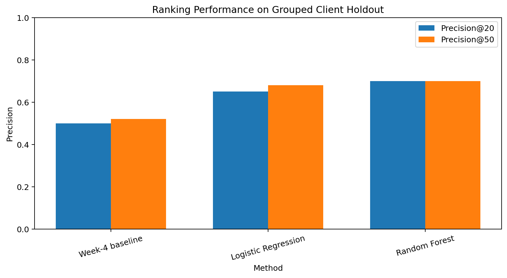
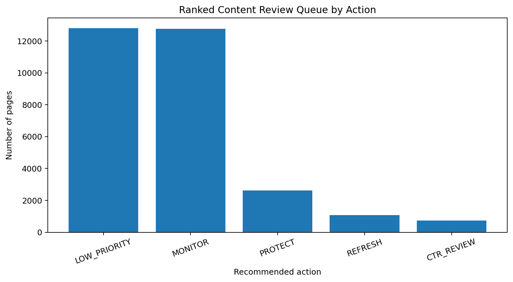

Abstract
This project asks which pages should be reviewed first for refresh, expansion,
protection, pruning, or monitoring using observable search, engagement,
freshness, and content signals. Using the anonymized FlyRank starter dataset,
I defined a current decline proxy from trend_direction == "down"
and framed the task as a ranking problem because review capacity is limited.
A client-grouped 75/25 holdout was used so pages from the same client did not
appear in both training and test sets. On that holdout, the Random Forest
reached Precision@50 of 0.700, compared with
0.520 for the Week-4 rule baseline. The result supports a
directional, human-review queue; it does not prove that a content refresh
causes recovery or predict Google's ranking algorithm.
1. Introduction & Question
The practical decision is simple: when a content team has more pages to review than it can handle, which pages should be looked at first?
Research question
Which pages should be reviewed first for refresh, expansion, protection, pruning, or monitoring using observable search, engagement, freshness, and content signals?
Decision supported
Prioritize limited SEO/content review capacity by ranking pages for human review.
Primary user
SEO/content strategist or editor.
Action
Review the ranked page, inspect its reason code, and decide whether to refresh, review CTR, protect, monitor, or assign lower priority.
2. Data
The headline capstone results use the bundled anonymized starter dataset: 30,000 pseudonymized content rows with trailing 90-day search and engagement metrics across 32 clients. The dataset is designed for public-safe ML experimentation and does not expose client names, domains, URLs, private queries, or credentials.
Data used
- 30,000 content items.
- 32 clients used as grouping entities for validation.
- Trailing 90-day search and engagement metrics.
- Content age and freshness fields used as structured signals.
Excluded from modeling
The label-derived fields trend_direction and
trend_pct were excluded. Identifiers such as
content_id and client_id were used only for
grouping/joining and were not model features. Product-derived flags and
health/opportunity fields were also excluded to avoid target leakage and
circular decision logic.
3. Methodology
Task framing
This is a ranking task. The goal is not to assign a permanent binary label to every page, but to order pages so that a limited review team can inspect the most useful candidates first.
Decline proxy
The current decline proxy is
trend_direction == "down". In the full dataset, 16,262 of
30,000 rows were marked down, giving a proxy rate of 54.2%.
This is an observed current-state proxy, not a future prediction.
Final model features
| Feature | Role |
|---|---|
| impressions_90d | Search visibility |
| sessions_90d | Engagement / traffic signal |
| ctr | Search click-through signal |
| avg_position | Observed search position |
| content_age_days | Content age / freshness |
| days_since_last_update | Update freshness |
| avg_position_missing | Explicit missing-position indicator |
Validation
A 75/25 client-grouped holdout was used with random seed 42. The grouping prevents the same client's pages from appearing in both train and test. The test-set decline-proxy rate was 0.517.
Baseline and models
The transparent Week-4 baseline combines three observable ideas: CTR below the median for a position bucket, staleness plus visibility, and search visibility. Logistic Regression and Random Forest were then trained with balanced class weights. The ranking metric is Precision@K, with Precision@20 and Precision@50 reported.
Leakage checks
The model feature set contains no target field, target-derived field,
identifier, or product-derived opportunity flag. Position value
0 is treated as missing and represented with an explicit
missingness feature.
4. Results
All primary methods were evaluated on the same client-grouped test set. The base-rate reference is not shown as a ranked method because a constant base rate does not create a meaningful ordering.
| Method | Precision@20 | Precision@50 |
|---|---|---|
| Week-4 baseline | 0.500 | 0.520 |
| Logistic Regression | 0.650 | 0.680 |
| Random Forest | 0.700 | 0.700 |

5. Limitations & Honest Framing
- The target is a current decline proxy. It is not a future outcome and does not prove that a page will decline or recover.
- The data is observational. The model identifies patterns useful for prioritization but cannot establish that refreshing a page causes better performance.
- Client-grouped validation is more conservative for unseen-client generalization, but future production performance can still differ.
- The feature set is limited to structured search, engagement, freshness, and content signals and does not represent every factor affecting page performance.
- Precision@20 and Precision@50 measure ranking quality for review prioritization. They do not measure revenue, traffic recovery, or causal impact.
- Human review remains required before any content action.
- The model does not predict or explain Google's ranking algorithm.
What it does not support: causal claims, guaranteed traffic recovery, guaranteed content improvement, or prediction of Google's algorithm.
6. Ranked Recommendations
The model is converted into a human-review queue rather than an automated content-change system. Each page receives an action and a reason code. The five intended actions are:
| Action | Meaning |
|---|---|
| REFRESH | High model score with stale and lower-CTR signals; review freshness, intent, completeness, and quality. |
| CTR_REVIEW | High model score with visibility and a CTR gap; inspect search intent, title/snippet, and SERP opportunity. |
| PROTECT | High model score and strong visibility; review carefully before making changes and monitor performance. |
| MONITOR | Visible page with lower immediate priority; keep under observation. |
| LOW_PRIORITY | Limited current visibility; do not consume scarce review capacity first. |
Queue distribution
The completed capstone queue contains 30,000 pages. The current run produced:

7. Acknowledgments & Data Credit
Built as part of the FlyRank ML Internship using the anonymized internship dataset and the internship's public-safe ML workflow.
Data credit: FlyRank
Reproducibility artifacts
work/notebooks/capstone.ipynb— capstone analysis.work/outputs/capstone_model_results.csv— model comparison.work/outputs/capstone_action_counts.csv— action distribution.work/outputs/capstone_precision_comparison.png— results chart.work/outputs/capstone_action_distribution.png— queue chart.
This page is a research and decision-support artifact. Results are observed on the stated evaluation slice and should not be interpreted as causal proof or a guarantee of future performance.